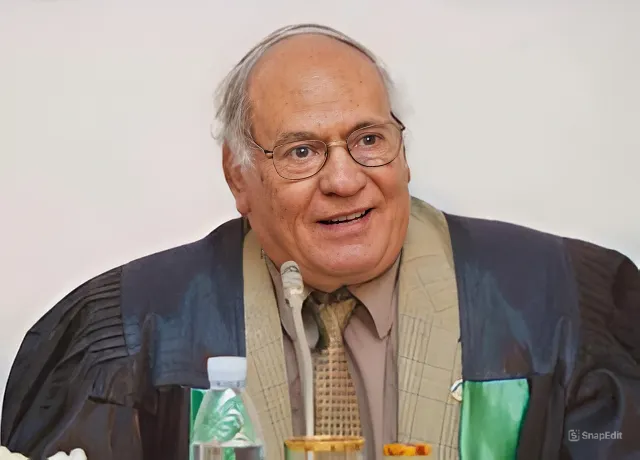

أستاذ ورئيس مجلس قسم المكتبات والمعلومات الأسبق
📍 النشأة والتعليم
- الدكتور شعبان عبد العزيز خليفة من مواليد عام 1945. حصل على ليسانس الآداب - قسم المكتبات والمعلومات من جامعة القاهرة سنة 1967، ودي كانت البداية لمسيرته الطويلة في عالم المعرفة والمكتبات.
- استكمل مشواره الأكاديمي بحصوله على درجة الماجستير سنة 1972 برسالة تناولت تنظيم المعرفة في المكتبات الأكاديمية. وفي عام 1977 حصل على درجة الدكتوراه، وكان من أوائل الباحثين المصريين اللي كتبوا عن تطور النظم الآلية في خدمات المكتبات، وده خلى اسمه دايمًا في الصفوف الأولى لتطوير المجال.
🧑🏫 المسيرة الأكاديمية والمهنية
- بدأ العمل في قسم المكتبات كمُعيد عام 1968، ثم تدرج في السلم الأكاديمي حتى أصبح أستاذًا بالقسم عام 1988.
- شغل منصب رئيس مجلس القسم خلال الفترة من 1992 إلى 1996، وترك بصمة واضحة في تطوير المناهج وتحديث المعامل..
- عمل في لجان تطوير التعليم والاعتماد والجودة بالجامعة منذ 2005.
📚 الإنتاج العلمي
- نشر أول كتاب له بعنوان "المدخل إلى علم المكتبات والمعلومات" عام 1980، ويُعد مرجعًا للطلاب حتى اليوم.
- كتب أكثر من 30 بحثًا علميًا محكمًا نُشرت بين أعوام 1975 و2015، غطّت مجالات: فهرسة المخطوطات، الفهرسة الموضوعية، التعليم الإلكتروني في المكتبات.
- أشرف على ما يزيد عن 40 رسالة ماجستير ودكتوراه في الجامعات المصرية والعربية من 1980 وحتى 2010.
🌍 المشاركات والمؤتمرات
- شارك في مؤتمرات الاتحاد العربي للمكتبات والمعلومات (اعلم) منذ تأسيسه في 1986.
- مثّل مصر في ملتقيات علمية بالمملكة العربية السعودية والإمارات وتونس بين 1990 و2008.
- عضو في لجان تطوير التعليم العالي بوزارة التعليم العالي المصرية منذ 2000.
🏅 الجوائز والتكريم
- جائزة جامعة القاهرة للتميز الأكاديمي عام 1995.
- تكريم من اتحاد المكتبات المصرية عام 2010 لجهوده في تطوير علم المكتبات في الوطن العربي.
- تم تكريمه في عيد العلم عام 2012 ضمن نخبة من العلماء المصريين المميزين.